Diet
Want Personalised Diet Plan? E-mail Us Or Contact Us On Instagram
Diet is the most important thing whether you want to gain muscle/mass or want to lose weight or get shredded .First you need to understand what your body needs what your bodytype is and the decide a proper diet plan according to your need .Following a proper diet is difficult but the results will make you enjoy your diet .
So, if you want to gain weight or gain muscles your daily calories intake should be more than what you burn.This will help your gain mass and if you are planning to lose weight or cut your calories intake should be less than how much you burn.
What Your Body Needs:
- Protiens
- Carb
- Calories
What your diet should include ?
1. Milk
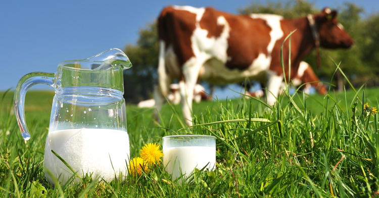Milk has been used as a weight gainer or muscle builder for decades.It provides a good balance of proteins, carbs and fats and is a good source of calcium, as well as other vitamins and minerals.For those trying to add more muscle, milk is an excellent protein source that provides both casein and whey proteins. Research has even shown it can help you add muscle when combined with weight lifting .Additionally, studies have found that milk, or whey and casein combined, can lead to greater mass gain than other protein sources .Try drinking around one or two glasses as a snack, with a meal, or before and after a workout if you are training.
100 gms of Milk contains 3.4g of protien
2. Home Made Protien Smoothies
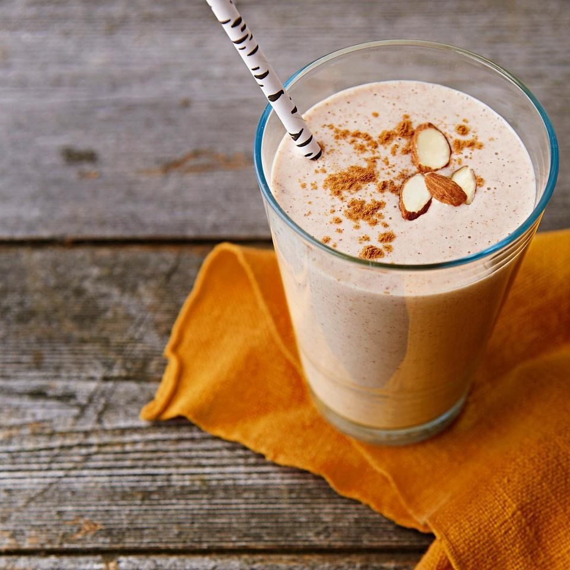These are few recepies you can try. Combine all the variations with a glass of MILK.
->Chocolate banana nut shake: Combine 1 banana, 1 scoop of chocolate whey protein and 1 tablespoon (15 ml) of peanut or another nut butter.
->Vanilla berry shake: Combine 1 cup (237 ml) of fresh or frozen mixed berries, ice, 1 cup (237 ml) of high-protein natural yogurt and 1 scoop of vanilla whey protein.
->Chocolate hazelnut shake: Combine 15 ounces (444 ml) of chocolate milk with 1 scoop of chocolate whey protein, 1 tablespoon (15 ml) of hazelnut butter and 1 avocado.
->Caramel apple shake: Combine 1 sliced apple, 1 cup (237 ml) of natural yogurt, 1 scoop of caramel- or vanilla-flavored whey protein and 1 tablespoon (15 ml) of sugar-free caramel sauce or flavoring.
->Vanilla blueberry shake: Combine 1 cup (237 ml) of fresh or frozen blueberries, 1 scoop of vanilla whey protein, 1 cup (237 ml) of vanilla yogurt and sweetener if needed.
->Super green shake: Combine 1 cup (237 ml) of spinach, 1 avocado, 1 banana, 1 cup (237 ml) of pineapple and 1 scoop of unflavored or vanilla whey protein.
3. Cottage cheese (Paneer)
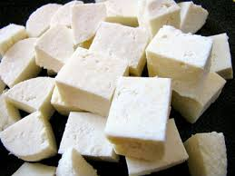Paneer (cottage cheese) is a type of cheese contains protein, fat and carbohydrates. The content of carbs is very low but both proteins and fat contents are almost equal and high.For vegetarians this is the best source of protien 100 gms of paneer made from cow milk provides 18.3 gms of protein
4.Healthy Fats and Oils
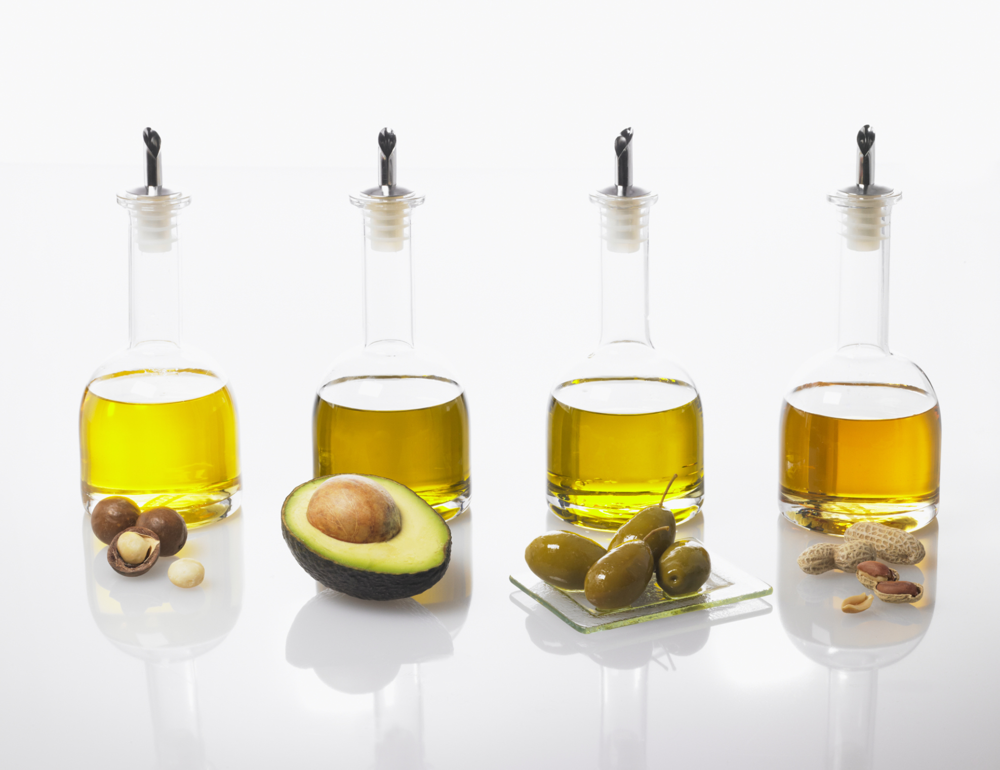Healthy fats and oils are some of the most calorie–dense foods on the planet.Simply adding a tablespoon (15 ml) of oil to sauces, salads and during cooking can quickly add 135 calories.Healthy oils include extra virgin olive oil, avocado oil and coconut oil.
5.Yogurt
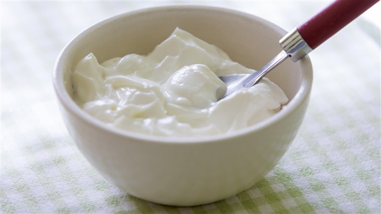 Yogurt is another healthy and convenient snack. It has a great nutritional profile, including a well-balanced mix of protein, carbs and fat.
100 grms og greek yogurt contains 10 grm protien.
6. Whole Eggs
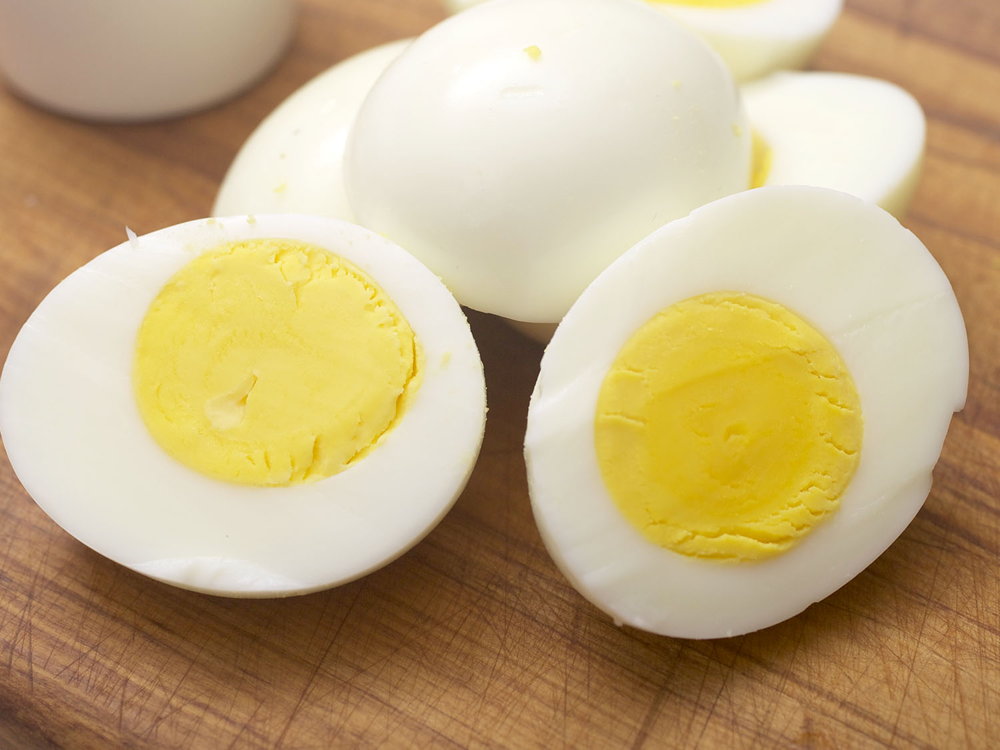Eggs are one of the healthiest muscle-building foods on the planet. They provide a great combination of high-quality proteins and healthy fats.It's also very important to eat the whole egg. In fact, almost all of the beneficial nutrients in eggs are found in the yolk.As long as you don’t have an intolerance to eggs, there is no need to limit your egg consumption — you can easily eat three eggs per day if you want.In fact, many athletes or bodybuilders will eat six or more daily.
1 whole egg contains 6g of protien
7. Healthy Cereals

Healthy cereals can be an excellent source of carbs, calories and nutrients.While you should avoid processed, high-sugar cereals, healthier forms like oatmeal can be a great carb source to add to your diet.Grain-based cereals and oats also contain beneficial nutrients like fiber and healthy antioxidants .When purchasing cereals, focus on these healthy choices:
Oats
Granola
Multigrains
Bran
Ezekiel
Make sure to read the label and avoid cereals with refined grains or added sugar.
8.Whole-Grain Bread
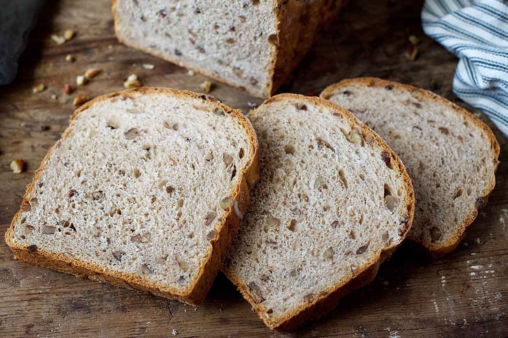Whole-grain breads are another good carb source to help you gain weight. You can make some very simple, high-calorie and well-balanced meals by combining bread with protein sources such as eggs, meat and cheese. When purchasing bread, aim for natural whole-grain and seeded breads
9.Salmon and Oily Fish
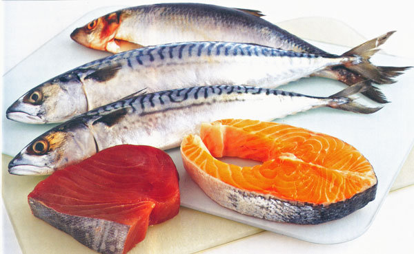Like red meat, salmon and oily fish are excellent sources of protein and important healthy fats.Out of all the nutrients that salmon and oily fish provide, omega-3 fatty acids are among the most significant and well known.They offer numerous benefits for your health and fight diseases.Just 170-gram of salmon provides around 350 calories and 4 grams of omega-3 fats. The same serving packs 34 grams of high-quality protein, helping you build muscle or gain weight.
10.Potatoes and Starches
> 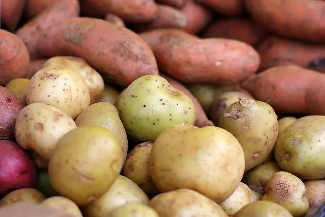Potatoes and other starchy foods are a very easy and cost-effective way to add in extra calories.Not only do potatoes and other starches add carbs and calories to help you gain weight — they also increase your muscle glycogen stores.Glycogen is the predominant fuel source for most sports and activities .Many of these carb sources also provide important nutrients and fiber, as well as resistant starch, which can help nourish your gut bacteria.
12. Nuts and Nut Butters
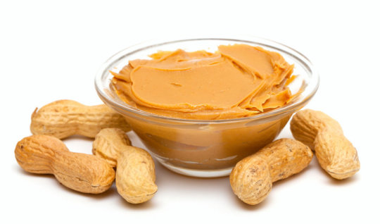Nuts and nut butters are a perfect choice if you're looking to gain weight.Just one small handful of almonds contains over 7 grams of protein and 18 grams of healthy fats.Since they’re very calorie-dense, just two handfuls per day with a meal or as a snack can quickly add hundreds of calories.Nut butters can also be added to a variety of snacks or dishes, such as smoothies, yogurts and much more.However, make sure you pick 100% nut butters with no added sugar or extra oils.
13. Rice
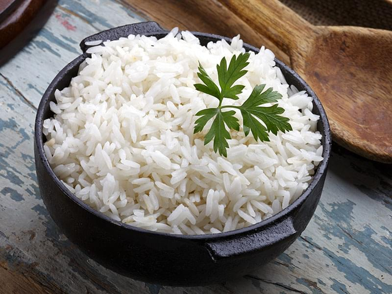Rice is a convenient, low-cost carb source to help you gain weight. Just 1 cup (165 grams) of cooked rice provides 190 calories, 43 grams of carbs and very little fat.It is also fairly calorie-dense, meaning you can easily obtain a high amount of carbs and calories from a single serving. This helps you eat more food, especially if you have a poor appetite or get full quickly.When you’re on the go or in a rush, two-minute packs of microwavable rice can be easily added to other protein sources and pre-made meals.Another popular method is to prepare a large pot of rice for the week and combine it with some proteins and healthy fats.However, extremely large amounts may not be wise due to their potential arsenic and phytic acid content. Arsenic can cause toxicity and phytic acid can reduce the absorption of zinc and iron.
14. Sprouts
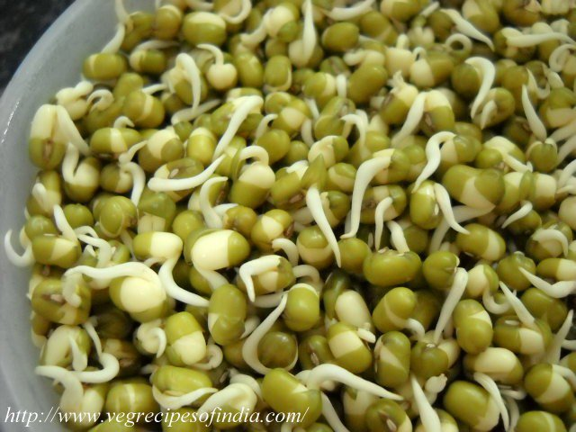"The sprouting process make the nutrients in the grains more highly absorbable, meaning the body doesn't have to work as hard to break them down," says Jessica Cording, M.S., R.D. "
The sprouts that emerge from dried peas, also known as split peas, provide 10.6 grams of protein per half cup. ...
100 g of Moong contains 24g of protien.
15. Soyabean
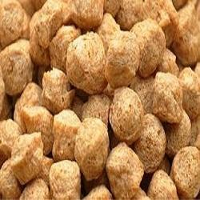Soy foods are moderately high in calories, which means they can help you gain weight, but they could also fit into a restricted-calorie weight-loss diet. ... Eat a cup of firm tofu, and you'll take in 176 calories along with beneficial nutrients like protein, calcium and iron.
100 g of soyabean contains 36g of protien
These are few food items which you should include in your diet there are still many more. If you want a personalised diet plan as per your scheduleE-mail Us Or Contact Us On Instagram